Catrillionaire Investigates! Bikers vs Jews - Part 1
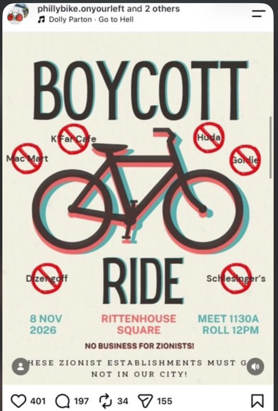
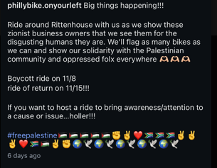
On Friday, October 30th, 2026, an account called phillybike.onyourleft made a post on instagram, collaborated on with: na4aphilly, phillysolidaritycal, and boycottcooknsolo, in order to announce a protest this Sunday, November 8th, at 11:30am in Rittenhouse Square against alleged Zionist business owners in Philadelphia, posted alongside Dolly Parton’s “Go to Hell”, alongside support from Philly Writers Against the War on Gaza. “No business for Zionists! These Zionist establishments must go! Not in our city! Ride around Rittenhouse with us as we show these zionist business owners that we see them for the disgusting humans they are. We’ll flag as many bikes as we can and show our solidarity with the Palestinian community and oppressed folx everywhere (three heart-hands emojis). Boycott ride on 11/8, ride of return on 11/15!!!”
It was a slow news day when I saw this post. The midterms ended, but I couldn’t write my planned essays about Iran, marijuana reform, or the siege of Hebron, either because nothing topical was happening with them or because after doing research I didn’t feel comfortable in any of my narratives for the stories. What got me interested was actually this article by the New York Post, a giant right-leaning tabloid newspaper based out of NYC that’s pivoted more towards actual investigative journalism the last decade. Once a laughing stock, this media giant now has country-wide reach. Imagine my surprise that they’d cover a story about a small-scale protest in Philadelphia by a group of hard-left liberal bikers.
The headline reads: “Chilling Philadelphia Protest on Nazi Terror Anniversary Demands Jewish-Owned Shops Leave the City”
The story itself was simple and straightforward, reiterating the post’s claims and interviewing a subject of the boycott, co-owner of a shop called Mac Mart.
“It’s scary… you can’t get a break, and now I have to worry about being born Jewish.”
Lieberman pointed out that business has nothing to do with Israel or Judaism. She suspects that the protesters just assumed she was pro-Israel because she openly wears a Star of David necklace.
“These people think I’m [Israeli Prime Minister Benjamin] Netanyahu. I literally am just a Jewish girl from the suburbs who started a business,” she added.
But it’s just more than Mac Mart that is being targeted with this protest. In a recent update from phillybike.onyourleft, the group outlines explicitly all the groups that they’re going to be targeting in the protest, clarifying “Our boycott specifically targets CookNSolo and the affiliated business Soom Tahini, but every business that subscribes to the genocidal ideology of Zionism is subject to boycott and has no place in our city.” The list of official businesses then listed includes: CookNSolo, Goldie, Zahav, Jaffa Bar, Dizengoff, Aviv, Federal Donuts, K’Far, Laser Wolf, Lilah, and Soom Tahini.
Philly Bike on Your Left’s update levies criticisms at Mike Solomonov and CookNSolo specifically. CookNSolo has been criticized for hosting dinners for soldiers and politicians, for raising over $100,000 for a medical supplies company the month of the October 7th attacks, firing outspoken political employees, and Solomonov’s claims that what he’s doing in the kitchen is more productive for Israel than him being a soldier.
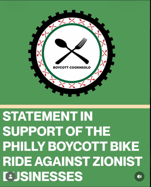
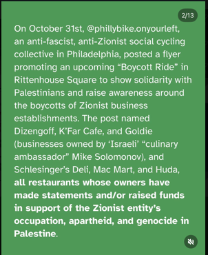
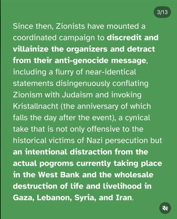
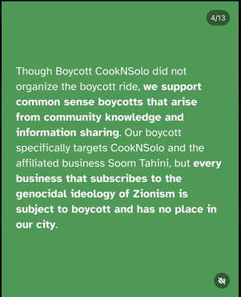
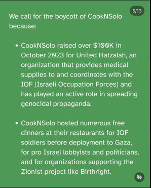
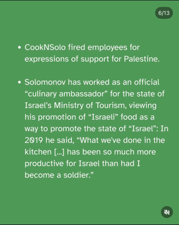
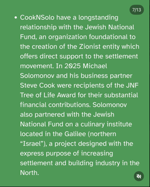
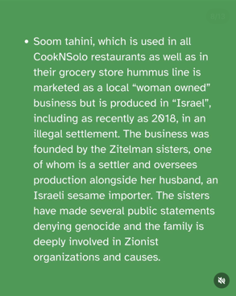
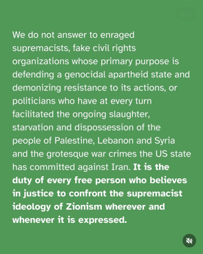
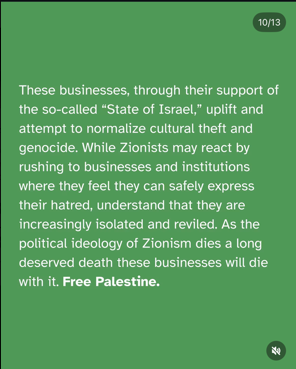
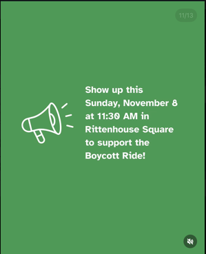
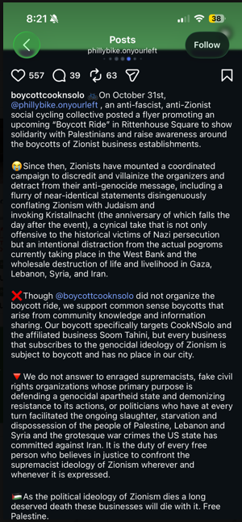
Now, for some time, these posts actually had comments enabled, so you could really see the narrative unfold in real-time.
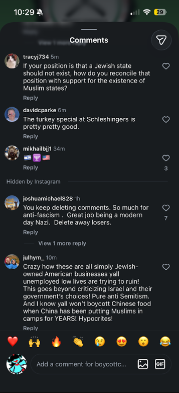
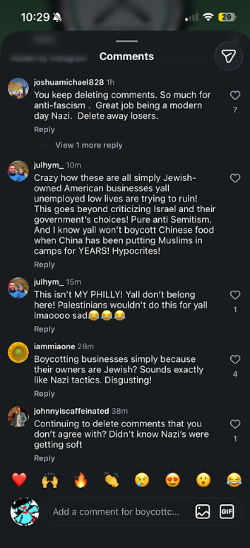
Being the investigative reporter that I am, I commented and asked why all the comments were being deleted. After deleting my comment, a few hours later they had locked and removed all comments from their post.
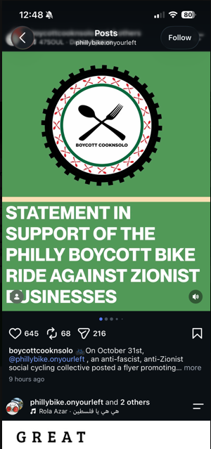
I began looking elsewhere to see who else was covering the story. Well, a lot of Jewish publications, for sure, but as November 4th continued to come along, more news articles came out about the story. Governor Josh Shapiro, a day after the midterms, turned his attention to this protest and made a statement condemning it, which got picked up by other Jewish outlets and Fox News:
Philadelphia boycott ride targeting Jewish businesses draws swift rebuke | Fox News
As the Fox news site notes, “The Anti-Defamation League (ADL) Philadelphia, American Jewish Committee Philadelphia/Southern NJ, Jewish Federation of Greater Philadelphia and StandWithUs released a joint statement condemning the event as "Jew-Hatred, plain and simple" and called on city and state leadership to do the same.”
Mayor Cherelle Parker posted her own statement to instagram:
But the comments on this post are much different from the critical ones we’ve seen removed from Philly Bike On Your Left’s page:
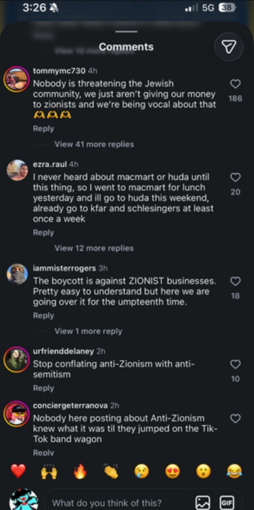
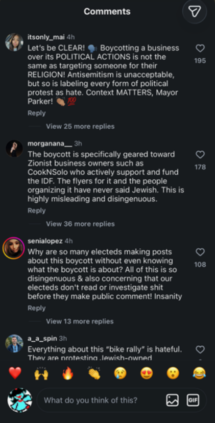
Context does matter. Educate yourself indeed. Let’s look at some more posts online to try and educate ourselves about what other people think of this issue. After all, all politics is local, and you certainly don’t want to be going against the zeitgeist for having a different opinion than someone else. That’ll just lead to ostracization and you being boycotted yourself.
Let’s check reddit. Let’s see what other liberals think. The interesting thing is, for as liberal as instagram and reddit both are, they seem to be at complete opposite ends of this issue. Don’t believe me? Check yourself: Philadelphia bike rally targeting Jewish businesses condemned; police prioritize safety : r/philadelphia
Here’s some highlights, starting with the top comments, and going onto ones I find interesting:
But the most interesting one I’ve found is here, from ihm96.
Ihm96 also name drops Hala Asraf as the organizer a few times, and after fact-checking this, I was left with a burning question… who is this? They haven’t put their name on or associated themselves publicly with this movement at all.
Hala Asraf has an instagram? Color me surprised, but I can’t seem to find it anywhere. Something else that’s missing, her social media for her bike activities:
And alongside that, it looks like she’s scrubbed her LinkedIn.
It’s November 5th at the time of writing, and she did have a much more active LinkedIn yesterday. You can even catch some details of the page that are still on Google right now, but I also don't want to doxx her further, so you have to do your own research on this.
Now, none of that has stopped Hala Asraf from being doxxed, though it’s unclear if she’s currently working as a medical scribe, or is a nursing student, or works at a bike shop, or somewhere else entirely. I don’t have to show you any social media posts about this, just take my word for it that people are coming for her job, her income, wherever she is. What a reversal of fortune, where instead of you cancelling a series of Jewish businesses, destroying years of work and the owner’s livelihoods, it’s now your own livelihood that’s being threatened by your political opinions.
Before ending this article for the night, I want to leave some closing comments made underneath Cherelle Parker’s instagram post, where Boycott CookNSolo will give us the last words to close us out:
The question now is, who’s right on this side of the story? Is there a right side to this story? Are the comments from reddit uninformed? What about that massive support under Parker’s post? Are the right-wing news outlets that speak about this issue biased against it for political reasons? Will the protests on Sunday be a massive turnout for Philly Bike On Your Left, or will counter-protestors show up and prove to be the louder voice? Is the police presence that’s going to show up be enough to keep people from screaming and yelling at each other? My guess is… probably not.
But hey, what do I know? I’m just a voice on the internet. My opinion isn’t better than yours, I’m exposed to as much news and propaganda as anybody else. My goal here is to create a time capsule, something that can be studied and documented before each side of this story gets louder and revises their own history of events to tell to people later.
Our next journalism piece will be reporting from the ground of this protest to see just how loud people on the internet will get in real life, from both supporters and detractors of the movement. Maybe we’ll be surprised. Maybe we’ll have a calm, polite dialogue and debate, like our moderated presidential ones. Maybe you’ll come out of the next article with a different set of emotions or beliefs while going into it. Maybe not. I’ll be here to cover the ins and outs of both sides, and give you all of the information you need to know so that You Can See Everything.
Who’s on first?
-Catrillionaire